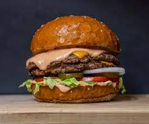

BURGER

Description
A burger is a sandwich that consists of one or more cooked patties of ground meat, usually beef, placed inside a sliced bread roll or bun. The meat can be seasoned with salt, pepper, herbs, spices, cheese, or other ingredients. The burger can be served with various toppings, such as lettuce, tomato, onion, pickle, ketchup, mustard, mayonnaise, or barbecue sauce
A burger is a satisfying and convenient meal that can be enjoyed at any time of the day. It can be made at home or ordered from a restaurant or a fast-food chain. There are many types of burgers, such as classic, cheese, bacon, mushroom, veggie, chicken, fish, and more. Each type has its own flavor and texture. Some people prefer a juicy and tender burger, while others like a crispy and charred one. Some people enjoy a simple and plain burger, while others opt for a complex and loaded one.
Ingredients
- Ground beef
- Egg
- Bread Crumbs
- Seasoning
- Buns
- Toppings
- Ketchup
- Mayo
- Hot Sauce
- Mustard
Steps
- Make the burger patty: You need to mix ground beef, egg, bread crumbs, and seasoning in a large bowl and knead it until you have a smooth and elastic mixture. Then, you need to shape the mixture into equal-sized balls and press them down to make flat burger shapes. Make a small indentation in the center of each patty with your thumb. This prevents the center from swelling, leading to uneven cooking. You can also use other types of meat or vegetarian alternatives for your patties.
- Make the burger sauce: You need to cook tomatoes, garlic, onion, herbs and spices in a saucepan over medium heat until they are soft and thick. You can also use tomato paste or ketchup as a base for your sauce. You can adjust the seasoning according to your taste.
- Assemble and cook the burger: You need to preheat the oven and a baking sheet or a pizza stone to a high temperature (around 240°C or 220°C fan). Then, you need to place the patties on the baking sheet or the pizza stone and bake them for about 15 minutes or until they are cooked through. You can also cook them on a grill, a skillet, or a barbecue. In the last few minutes of cooking, you can add cheese slices on top of the patties if you like. Then, you need to cut the buns in half and toast them lightly. You need to spread the sauce evenly over the bottom halves of the buns and place the patties on top. You can also add any toppings of your choice, such as lettuce, tomato, onion, pickle, ketchup, mustard, mayonnaise, barbecue sauce, etc. Then, you need to cover the burgers with the top halves of the buns and serve them hot.